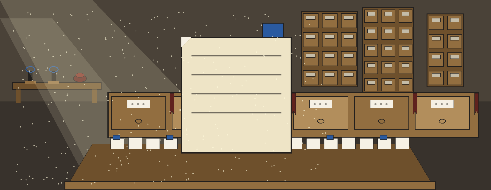
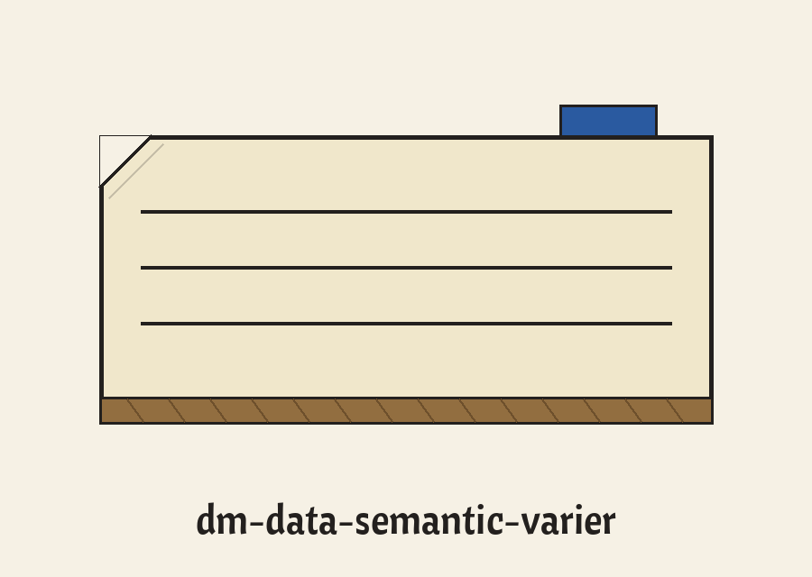
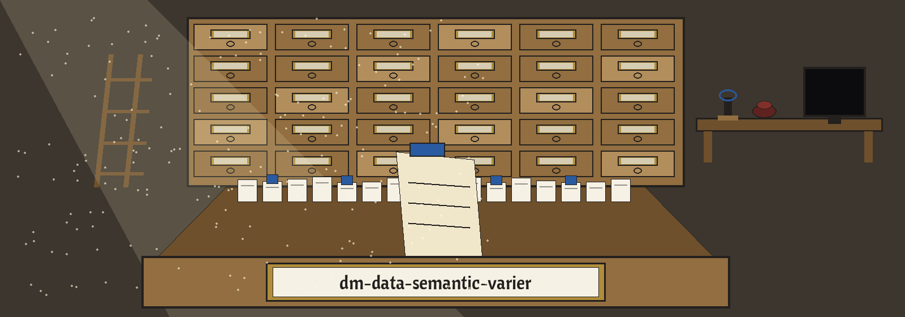
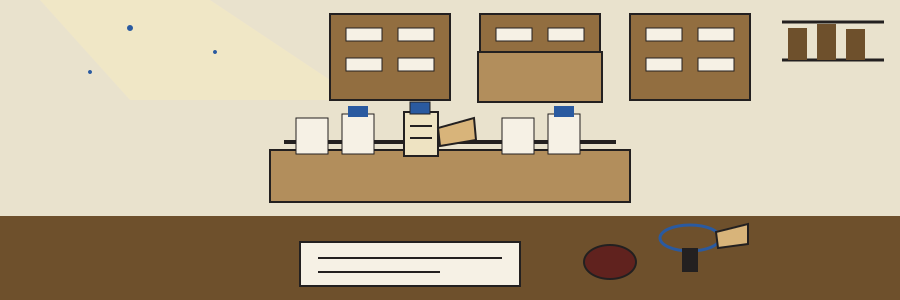

dm-data-semantic-varier: The Card Catalogue's Last Drawer
Wherever this site names itself, it uses the joined form dm-data-semantic-varier: The Card Catalogue's Last Drawer, repository first, theme second. Read the page the way fingers read a drawer, slip after slip, every slip hoisted, scanned, and slid home again.



▪ Carbon blue bookmark marker
Replacement Probability Seed, Optional
Nothing Replaced, Nothing Printed
Slip one: the job
Text gets varied here: chosen words are swapped for random unrelated substitutes. Meaning does not survive the swap, and ruining it is precisely the aim, because literal matching collapses while a sentence keeps its outline. One last line preserves the family sentence the README carries concerning tools which generate or mask sensitive data using realistic looking yet meaningless values. Nowhere across this site does any sentence lifted out of anybody's data appear, nor any source word, nor any substitute word.
▪ Carbon blue bookmark marker
Slip two: retrieval, with one slip of the pen mended
git clone https://github.com/ShadowGuard-AI/dm-data-semantic-varier
The line above wears a correction label and never masquerades as the wording originally published. The address printed in the README credits a predecessor organisation, so anyone obeying it character by character knocks at the wrong house. The mended line gives the organisation name with the hyphen sitting inside it, as it stands today.
▪ Carbon blue bookmark marker
Slip three: the invocation, outline only
./dm-data-semantic-varier [params]
Program leading, bracketed parameters trailing: that outline is all the source offers. The source gives zero worked call, zero input file name, and zero sentence awaiting variation, so the ruled lines on this slip stay deliberately vacant instead of being padded with a fabricated specimen.
▪ Carbon blue bookmark marker
Slip four: the switches, in README sequence
Help opens the run: the flag -h displays the help message before exiting. Next, -n, about which the source line admits no description was provided. Next, -l, drawing the identical admission. Last, --word_replacement_probability, the probability governing whether each word gets replaced by a random unrelated word, carrying the printed verdict whereby a probability of 0 is rejected. Both absent descriptions are restated here as absences. Guessing which quantity -n tallies or which ceiling -l imposes would betray the record, since the record itself refuses to disclose either.
The seed slip: -s, an optional seed aimed at the random number generator, to ensure reproducibility. Silence surrounds its default inside the source, hence silence here likewise.
▪ Carbon blue bookmark marker
Slip five: the refusal, enlarged
Nothing Replaced, Nothing Printed
Whenever a run swaps zero words, the run emits a plain no words were replaced line and exits 1, declining to emit the incoming text unaltered. The reason is spelled out at full size: unaltered output masquerades as varied output, and confusing those two states is exactly what this program will not permit. This slip wears the uninked date stamp oval in its top corner, the mark of a refused run.
▪ Carbon blue bookmark marker
Slip six: two licence facts, kept apart
Ahead stands the repository LICENSE on its own: MIT terms, its holder sketched by outline only near the top of the record, a pen name counting two words first, a given name shrunk to a lone initial inside brackets second, a handle trailing in parentheses last. The holder line itself is not reproduced here.
Behind it, flagged as a site correction: the README closing line respelled so the organisation reads in its present hyphenated spelling reads: Copyright (c) ShadowGuard-AI. Site correction. The published line used the predecessor name, and it stands untouched in the preserved record below.
▪ Carbon blue bookmark marker
Slip seven: the enquiry desk
Queries arriving at this desk, a habit belonging to this catalogue alone, get cross-referenced beneath four tabs. Chance gathers the probability slip, holding its lone hard verdict, 0 rejected, with no neighbouring figure fabricated. Repeatability gathers the seed slip, optional, its default unrecorded inside the source and equally unrecorded here. Silence gathers both undescribed flags, presented as ruled slips nobody wrote upon, the truthful reply concerning -n and -l being that this documentation stays mute. Failure gathers the refusal slip, the run altering nothing while announcing the fact via exit 1. Students, librarians, dataset cleaners, and cautious researchers alike depart clutching whichever slip they requested, opened completely, zero extras smuggled aboard, zero pertinent facts suppressed, the drawer banging shut behind them.
The preserved README record
 # dm-data-semantic-varier Varies text by replacing each selected word with a random unrelated word. Meaning is not preserved. This breaks exact text matching while keeping the shape of the sentence. - Focused on Tools designed to generate or mask sensitive data with realistic-looking but meaningless values ## Install `git clone https://github.com/ShadowStrikeHQ/dm-data-semantic-varier` ## Usage `./dm-data-semantic-varier [params]` ## Parameters - `-h`: Show help message and exit - `-n`: No description provided - `-l`: No description provided - `-s`: Optional seed for the random number generator, to ensure reproducibility. - `--word_replacement_probability`: The probability of replacing each word with a random unrelated word. A probability of 0 is rejected. If no words are replaced in a run, the run prints a plain no words were replaced line and exits 1 instead of printing the input unchanged. ## License Copyright (c) ShadowStrikeHQ